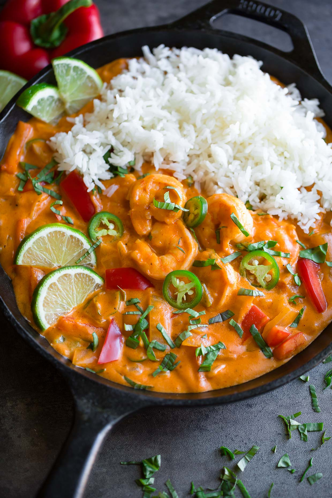

Red Coconut Curry with Shrimp

Satiating image of a plate of GRed Coconut Curry with Shrimp
There's red, there's coconut, there's curry, and there's shrimp!
What else could you want?
Ingredients
- 1 tablespoon vegetable oil
- 1 medium white onion, diced
- 1 medium red bell pepper, cut into thin strips
- 1 (14 ounce) can unsweetened coconut milk
- ½ medium jalapeno pepper, minced
- 3 tablespoons red curry paste
- 2 teaspoons chopped fresh dill
- 2 tablespoons all-purpose flour
- ½ cup chicken broth
- 1 cup milk
- 2 large tomatoes, chopped
- 1 tablespoon lemon juice
- 1 teaspoon salt
- 1 teaspoon ground black pepper
- ¾ cup grated Parmesan cheese
- ½ cup grated Romano cheese
- ¼ cup shredded mozzarella cheese
Steps
- Heat oil in a large pan over medium-high heat. Add onion, bell pepper, and jalapeno and cook until softened, 4 to 5 minutes. Use a slotted spoon to transfer veggies to a bowl and set aside.
- Reduce heat to medium and add coconut milk, curry paste, brown sugar, and fish sauce to the pan. Whisk together and bring to a gentle boil.
- Combine cornstarch and water in a small bowl; whisk to dissolve. Add to sauce and simmer, stirring occasionally, until thickened, about 5 minutes.
- Pat shrimp dry and add to the sauce along with the cooked veggies. Allow curry to simmer gently, stirring occasionally, until shrimp are cooked through and opaque, 3 to 5 minutes. Top with Thai basil and serve with lime wedges.